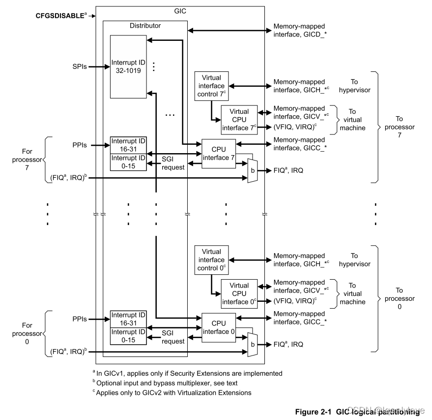
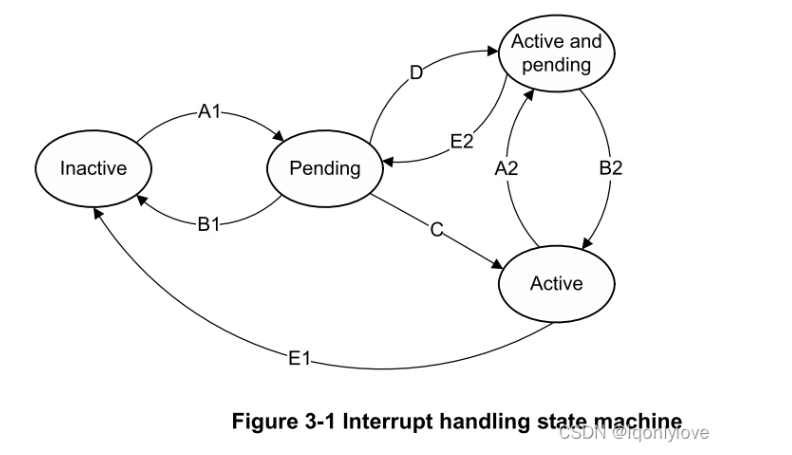
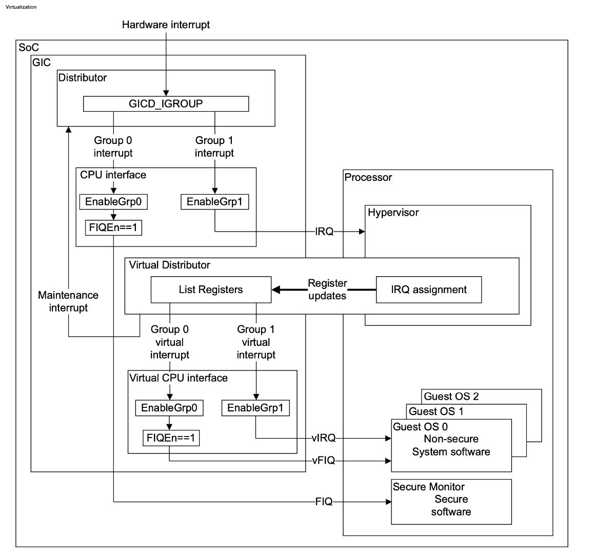
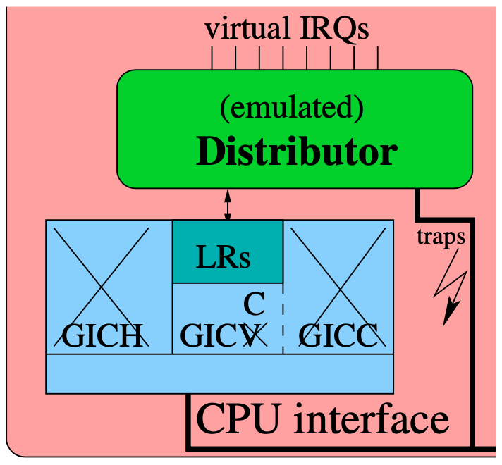
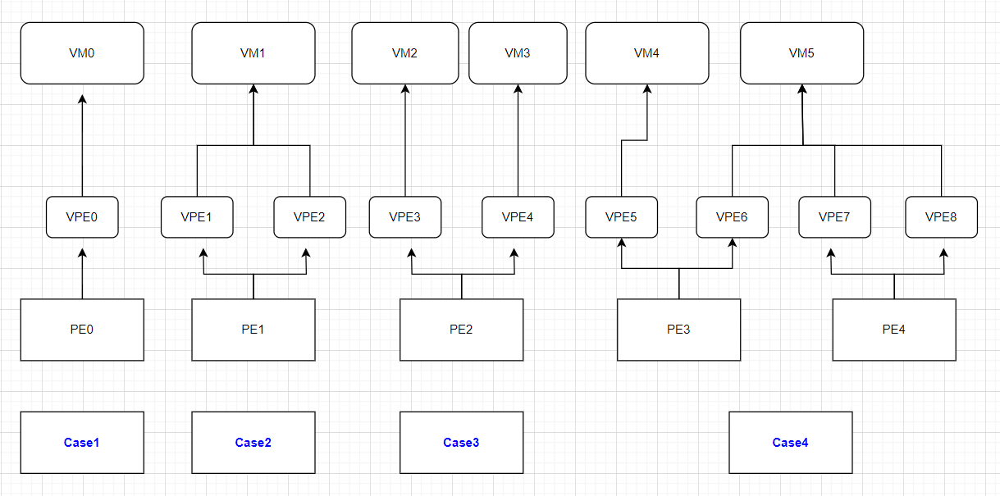
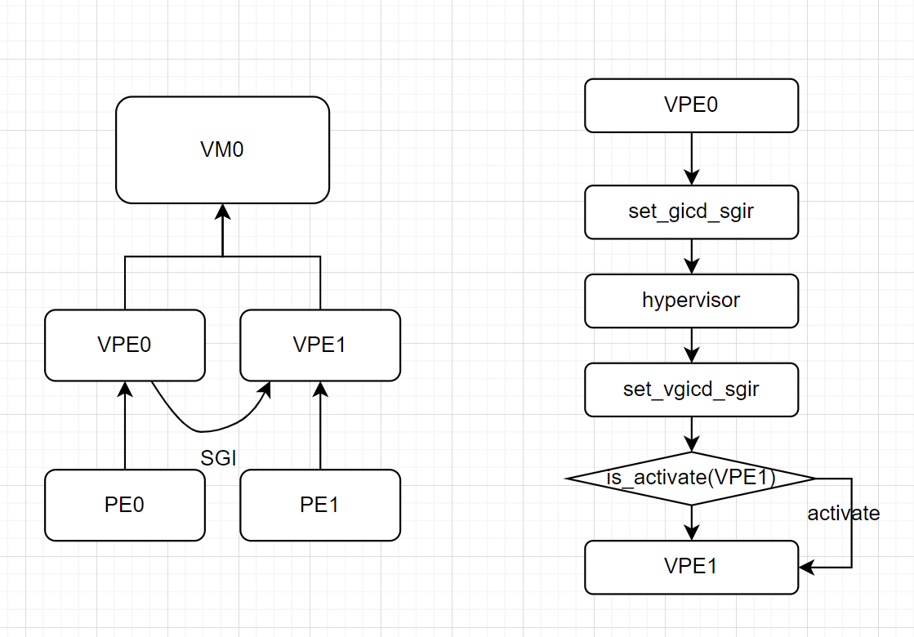
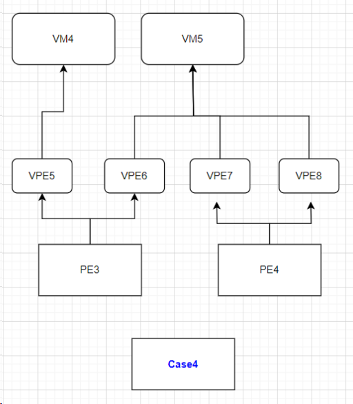

Virtual GIC v2 设计文档
一、GICv2介绍

通过上图可以确定，GIC 主要包含 3 部分：Distributor、CPU interfaces 和 Virtual CPU interfaces。Virtual CPU interfaces 包含 Virtual interface control 和 Virtual CPU interface。

-
中断进入 distributor，然后分发到 CPU interface
-
某个 CPU 触发中断后，读 GICC_IAR 拿到中断信息，处理完后写 GICC_EOIR 和 GICC_DIR（如果 GICC_CTLR.EOImodeNS 是 0，则 EOI 的同时也会 DI）
-
GICD、GICC 寄存器都是 MMIO 的，device tree 中会给出物理地址
中断类型
-
1. 软件生成中断（Software Generated Interrupts, SGI）
- 中断号范围：0 到 15（共 16 个中断号）
- 用途：用于处理器间通信（IPI），允许一个处理器核心向另一个处理器核心发送中断信号。
- 特点：每个核心都可以生成和接收这些中断，通常用于任务调度、同步等操作。
2. 私有外设中断（Private Peripheral Interrupts, PPI）
- 中断号范围：16 到 31（共 16 个中断号）
- 用途：用于处理与特定处理器核心直接相关的硬件事件，例如计时器中断、性能监控中断、调试中断等。
- 特点：这些中断是每个核心私有的，只有对应的核心会处理这些中断。
3. 共享外设中断（Shared Peripheral Interrupts, SPI）
-
中断号范围：32 到 1019（共 988 个中断号）
-
用途：用于处理系统中共享的外设中断，例如来自外部设备、网络接口、存储设备等的中断。
-
特点：这些中断是所有核心共享的，可以由任何一个核心处理，通常通过中断亲和性（affinity）来决定哪个核心处理该中断。
-
SPI默认发送vcpu 0上，同样将中断信号放到vcpu的ap_list字段排队，等待vcpu处理。
Distributor 作用
Distributor 主要作用为检测中断源、控制中断源行为和将中断源分发到指定 CPU 接口上（针对每个 CPU 将优先级最高的中断转发到该接口上）。
Distributor 对中断的控制包括：
-
全局启用中断转发到 CPU 接口
-
开启或关闭每一个中断
-
为每个中断设置优先级
-
为每个中断设置目标处理器列表
-
设置每个外设中断触发方式（电平触发、边缘触发）
-
为每个中断设置组
-
将 SGI 转发到一个或多个处理器
-
每个中断状态可见
-
提供软件设置或清除外设中断的挂起状态的一种机制
中断 ID
使用 ID 对中断源进行标识。每个 CPU 接口最多可以有 1020 个中断。SPI 和 PPI 中断为每个接口特定的，SPI 为为所有接口共用，因此多处理器系统中实际中断数大于 1020 个。
CPU Interface
CPU 接口提供一个处理器连接到 GIC 的接口。每一个 CPU 接口都提供一个编程接口：
- 允许向处理器发送中断请求信号
- 确认中断
- 指示中断处理完成
- 为处理器设置中断优先级掩码
- 为处理器定义抢占策略
- 选择最高优先级挂起中断
二、中断处理状态机
GIC 为每个 CPU 接口上每个受支持的中断维护一个状态机。下图显示了此状态机的实例，以及可能的状态转换。

- Inactive：该中断源处于未激活状态
- Pending：中断源触发状态，GIC感知到，但还未被分发到PE
- Active：中断已经被某个PE认领确认
- Active and pending：这个中断源的一次触发已经被PE确认，同时这个中断源的另一次触发正在pending状态
添加挂起状态（A1、A2）
-
对于一个 SGI，发生以下 2 种情况的 1 种：
- 软件写 GICD_SGIR 寄存器，指定目标处理器
- 目标处理器上软件写 GICD_SPENDSGIRn 寄存器
-
对于一个 SPI 或 PPI，发生以下 2 种情况的 1 种：
-
外设发出一个中断请求信号
-
软件写 GICD_ISPENDRn 寄存器
-
删除挂起状态（B1、B2）
- 对于 SGI
- 目标处理器写 GICD_CPENDSGIRn 寄存器
- 对于一个 SPI 或 PPI，发生以下 2 种情况的 1 种：
- 电平触发类型中断，信号取消
- 边沿触发类型中断，软件写 GICD_ICPENDRn 寄存器
挂起到激活（C）
- 如果中断使能，并且高优先级，软件从 GICC_IAR 寄存器读取时发生状态改变。
挂起到激活和挂起（D）
-
对于 SGI，这种转变发生在以下任一情况下：
- 将 SGI 状态设置为挂起的写入操作与读取 GICC_IAR 几乎同时发生
- 当多个挂起的 SGI 具有相同 ID 时，并且它们来自同一个源处理器并指向同一个处理器。其中一个 SGI 状态变为激活（C），其他 SGI 状态变为激活和挂起（D）
-
对于 SPI 或 PPI，满足以下所有条件，则发生这种转换
- 中断开启
- 软件读取 GICC_IAR，读操作将激活状态添加到中断中。
- 此外，还应满足以下条件之一：
- 对于电平触发中断，中断信号保持。通常都是这样，因为外设直到处理器处理完中断后才会取消触发信号。
- 对于边沿触发中断，是否发生此转换取决于读取 GICC_IAR 的时间（中断再次触发，上一次未处理），读取 GICC_IAR 可能会转换到 C，后面可能会转换到 A2。
删除激活状态（E1、E2）
- 软件写入 GICC_EOIR 或 GICC_DIR 来停用中断，
三、中断虚拟化设计
中断虚拟化概要

- HCR_EL2.IMO 设置为 1 后，所有 IRQ 都会 trap 到 Hypervisor
- Hypervisor 判断该 IRQ 是否需要插入到 vCPU
- 插入 vIRQ 之后，在切换到 VM 之前需要 EOI 物理 IRQ，即 priority drop，降低运行优先级，使之后 VM 运行时能够再次触发该中断
- 回到 VM 后，GIC 在 EL1 触发 vIRQ，这时候 EOI 和 DI 会把 vIRQ 和物理 IRQ 都 deactivate，因此不需要再 trap 到 Hypervisor ，不过如果是 SGI 的话并不会 deactivate，需要 Hypervisor 自己处理。
Hypervisor interface (GICH)
- GICH base 物理地址在 device tree 中给出
- 控制寄存器：GICH_HCR、GICH_VMCR 等
- List 寄存器：GICH_LRn
- KVM 中，这些寄存器保存在
struct vgic_cpu的vgic_v2字段，struct vgic_cpu本身放在struct kvm_vcpu_arch，每个 vCPU 一份 - vCPU switch 的时候，需要切换这些寄存器（KVM 在
vgic-v2-switch.S中定义相关切换函数） - VM 无法访问 GICH 寄存器，因为根本没有映射
vCPU interface (GICV, GICC in VM's view)
- GICV 也是物理 GIC 上存在的，base 物理地址同样在 device tree 中给出
- KVM 在系统全局的一个结构体（
struct vgic_params vgic_v2_params）保存了这个物理地址 - 创建 VM 时 Hypervisor 把一个特定的 GPA（KVM 中通过
ioctl设置该地址）映射到 GICV base 物理地址，然后把这个 GPA 作为 GICC base 在 device tree 中传给 VM - VM 以为自己在访问 GICC，实际上它在访问 GICV
- 目前理解这些 GICV 寄存器在 vCPU switch 的时候是不需要保存的（KVM 里没有保存 GICV 相关的代码），因为它其实在硬件里访问的是 GICH 配置的那些寄存器，比如 LR
Virtual distributor (GICD in VM's view)
- 实际是内核里的一个结构体（
struct vgic_dist） - 在 device tree 中给 VM 一个 GICD base，但实际上没有映射
- VM 访问 GICD 时，trap & emulate，直接返回或设置
struct vgic_dist里的字段（在vgic-v2-emul.c文件中） - 每个 VM 一个，而不是每个 vCPU 一个，所以
struct vgic_dist放在struct kvm_arch里
VM's view

- 从 device tree 获得 GICD、GICC base 物理地址（实际是 Hypervisor 伪造的地址）
- 配置 GICD 寄存器（实际上 trap 到 Hypervisor ，模拟地读写了内核某 struct 里的数据）
- 执行直到发生中断（中断先到 Hypervisor ，Hypervisor 在 LR 中配置了一个物理 IRQ 到 vIRQ 的映射，并且设置为 pending，回到 VM 之后 GIC 在 VM 的 EL1 触发中断）
- 读 GICC_IAR（经过 stage 2 页表翻译，实际上读了 GICV_IAR，GIC 根据 LR 返回 vIRQ 的信息，vIRQ 状态从 pending 转为 active）
- 写 GICC_EOIR、GICC_DIR（经过 stage 2 页表翻译，实际上写了 GICV_EOIR、GICV_DIR，GIC EOI 并 deactivate 对应的 vIRQ，并 deactivate vIRQ 对应的物理 IRQ）
VGIC设计
主要以以下4中case进行讨论，其中case4涉及vCPU调度，其他情况不涉及调度：

VGIC Distributor设计
#![allow(unused)] fn main() { struct VgicDist { ... nr_spis: usize, // num of SPIs spis: Vec<VgicIrq>, // store SPI dist_iodev: VgicIoDevice, // Distributor I/O设备描述符 .... } impl VgicDist { pub fn new() { let nr_spis = 256; let mut spis = Vec::new(); // init SPI interrupt for _ in 0..nr_spis { spis.push(VgicIrq { ap_list: RefCell::new(LinkedList::new()), vcpu: Some(Box::new(Vcpu {})), target_vcpu: Some(Box::new(Vcpu {})), intid: 0, line_level: false, active: false, enabled: true, }); } let dist_iodev = VgicIoDevice { }; VgicDist { nr_spis, spis, dist_iodev, } } } }
VGIC Distributor 主要模拟 nr_spis 个 spis 中断
#![allow(unused)] fn main() { struct VgicIrq { /// A linked list header for managing interrupts. /// This is used for managing the list of interrupts associated with a VCPU. ap_list: RefCell<LinkedList<Box<VgicIrq>>>, /// For SGIs and PPIs: The VCPU that generated the interrupt. /// For SPIs: The VCPU whose `ap_list` this is queued on. vcpu: Option<Box<dyn VcpuTrait>>, /// The VCPU that this interrupt should be sent to, based on the targets register (v2) target_vcpu: Option<Box<dyn VcpuTrait>>, /// The guest-visible interrupt ID. intid: u32, /// Indicates if the interrupt is level-triggered only. line_level: bool, /// Not used for LPIs. active: bool, /// Indicates if the interrupt is enabled. enabled: bool, } }
- GIC所以只处理SPI类型的中断，原因是其它两类中断的输入就是针对特定一个CPU的，不需要Distributor控制其中断信号的deliver行为；而SPI的目标CPU，是可以用户配置的，因此需要模拟一个Distributor来控制中断deliver的目标，并将Distributor的控制接口暴露给用户。
- target_vcpu结构用来存放用户设置的GIC中断路由信息，如果用户没有设置，那target_vcpu就使用默认的CPU0，后续GIC可能会根据负载均衡策略将中断分发到其它目标CPU上。换句话说，target_vcpu可能不是中断最终投递的CPU，只是一个初始值，而vcpu才是中断最终投递的CPU
VGIC初始化
- vgicd-ctrl 寄存器：
- 对于case 1、2 和 3，不需要 IPI 通信。case 4 需要 IPI 通信。
- vgicd-iid 寄存器，vgicd-type 寄存器：
- 这些寄存器保存 GIC 的一些属性和处理元素（PE）的数量。
- 虚拟化提供的 vgicd 应根据 VPE 的数量进行配置。
- vgicd-isenable 寄存器：
- getenable：直接从结构中读取内容。
- setenable：根据 vtop 和 ptov 设置配置 GIC。对于情况 1、2 和 3，不需要 IPI 通信。情况 4 需要 IPI 通信。
- 其他 emu 寄存器：
- 其他 vgicd-emu 寄存器与 isenabler 类似。
SGI软件生成中断
SGI是一种特殊的中断，由软件生成，通常用于在多核系统中实现CPU间通信。SGI的目标CPU由发送者指定，并且SGI可以被路由到一个或多个核上。
在虚拟化环境下，由于多个vCPU可能共享同一个物理CPU，hypervisor需要对SGI进行虚拟化，以确保VM之间的隔离性和透明性。
Hypervisor对SGI的拦截
在虚拟化环境中，当VM试图发送SGI时，通常通过修改guest的GIC相关寄存器来触发。VM本身无法直接访问物理的GIC Distributor（GICD）寄存器，因此这些写操作会被hypervisor拦截。
- vCPU到vCPU的SGI：VM发送SGI给自己的vCPU或同一个VM中的其他vCPU。
SGI的处理与路由
在SGI虚拟化中，hypervisor负责以下操作：
- 拦截和解析SGI：当VM写入GICD_SGIR寄存器（用于触发SGI），hypervisor会拦截该写操作。它解析出目标vCPU以及SGI的ID。
- SGI的重定向：hypervisor根据解析出的SGI信息，将SGI重新路由到目标vCPU，这里应该有有一个接口能够根据vcpu_id注入指定的中断。
- vCPU活跃：直接发送到指定的vCPU
- vCPU休眠：唤醒vCPU后，再发送到指定vCPU
- 中断优先级和状态管理：hypervisor需要维护虚拟中断的优先级和状态（如等待、激活等），以确保VM感知到的中断行为与物理硬件一致。
虚拟GIC的支持
为了让VM能够像使用物理GIC一样处理中断，hypervisor会提供虚拟的GIC接口（vGIC）。vGIC负责模拟GICD和GICC（CPU接口）的寄存器操作，并将这些寄存器映射到VM的地址空间。
虚拟GIC支持VM的SGI管理，包括：
- 虚拟GICD_SGIR寄存器：VM通过这个寄存器触发SGI，hypervisor在接收到写操作后进行中断重定向。
- 虚拟中断路由表：hypervisor维护一个虚拟的中断路由表List Registers，用来追踪SGI应该被路由到哪个vCPU。

PPI 私有外设中断
PPI通常用于管理特定于处理器的外设中断。在GICv2中，每个核心都有其专属的PPI，通常包括定时器中断和其他本地外设中断。在虚拟化环境中，hypervisor需要虚拟化这些中断，以便每个VM能够透明地访问和使用它们。
VM发起PPI请求
当VM中的vCPU需要处理PPI时，通常是通过对GIC的寄存器进行操作。例如，vCPU可能会读取或清除某个PPI的状态，这一操作需要经过hypervisor的拦截。
Hypervisor拦截请求
- 拦截操作：Hypervisor监测对PPI相关寄存器的访问请求，特别是GIC的PPI寄存器。
- 解析请求：Hypervisor解析该请求以确定哪个vCPU或VM正在进行操作，并根据需要处理这些请求。
PPI的路由和分发
- 管理PPI状态：Hypervisor需要维护每个VM的PPI状态，确保在VM运行时，PPI的状态能够正确反映在对应的vCPU上。
- 中断注入：当PPI中断发生时，hypervisor负责将中断注入到对应的vCPU中。对于PPI，hypervisor可以直接向目标vCPU发送中断请求，而不需要重定向。
目标vCPU处理中断
- vCPU处理PPI：一旦PPI被触发，目标vCPU会进入中断处理程序，执行相应的处理逻辑。
- 状态恢复：处理完成后，vCPU会清除PPI中断状态，并恢复执行状态。
Hypervisor的清理工作
- 状态管理：Hypervisor在处理完PPI中断后，负责清理中断状态和相关的寄存器，确保后续中断请求的正确性。

SPI 共享外设中断
在虚拟化环境中，SPI（Shared Peripheral Interrupt，共享外设中断）是一种用于处理多个处理器核心共享外设的中断。与SGI和PPI不同，SPI是针对共享设备的中断，允许多个CPU响应同一外设生成的中断。hypervisor在虚拟化SPI时需要确保VM之间的隔离，同时提供对共享外设的正确中断管理。
SPI通常用于系统中那些可以被多个处理器访问的外设，例如网络适配器、存储控制器等。在GICv2中，SPI由GIC的Distributor（GICD）管理，允许多个处理器核接收来自同一外设的中断。在虚拟化环境中，hypervisor需要将SPI虚拟化为适合多个VM使用的形式。
VM发起SPI请求
当外设生成中断时，它将通过物理GIC将SPI传递给相应的处理器核心。在虚拟化环境中，物理中断首先会传递到hypervisor。
Hypervisor的拦截和管理
- 拦截中断：Hypervisor拦截来自外设的SPI请求，并识别该中断的目标VM（如果已映射）。
- 中断映射：Hypervisor维护一个中断映射表，将物理中断与VM中的虚拟中断进行关联。
SPI的路由和重定向
- 目标VM识别：Hypervisor通过中断映射表确定SPI应该路由到哪个VM的vCPU。
- 中断注入：Hypervisor将SPI注入到目标VM的对应vCPU中，以触发中断处理。
目标vCPU处理中断
- 处理SPI中断：目标vCPU接收到中断请求后，执行相应的中断处理程序。此过程包括保存上下文、执行处理逻辑以及清除中断状态。
- 状态恢复：处理完成后，vCPU需要恢复到正常执行状态，并清除中断标志。
Hypervisor的清理工作
- 状态更新：Hypervisor在处理完SPI中断后，更新中断的状态，以反映当前的处理中断情况。

List Register

对于有虚拟化扩展的 GIC，Hypervisor使用 List Registers 来维护高优先级虚拟中断的一些上下文信息。
struct gich_lr {
uint32_t vid : 10; // virq 中断号
uint32_t pid : 10; // 此 field 根据 hw 值不同而不同
// hw=1，表示此虚拟中断关联了一个物理中断，此 pid 为实际的 physical irq 中断号
// hw=0，bit19表示是否 signal eoi，给 maintenance interrupt 使用，不做讨论
//bit12-10，如果这是一个 sgi 中断，即 virtual interrupt id < 15，那么此位域表示 requesting cpu id
uint32_t resv : 3; // 保留
uint32_t pr : 5; // 该virtual integrrupt 的优先级
uint32_t state : 2; // 指示该中断的状态，invalid、pending、active、pending and active
uint32_t grp1 : 1; // 表示该 virtual integrrupt 是否是 group 1 virtual integrrupt
// 0 表示这是一个 group 0 virtual interrupt，表示安全虚拟中断，可配置是按照 virq 还是 vfiq 发送给 vcpu
// 1 表示这是一个 group 1 virtual interrupt，表示非安全虚拟中断，该中断以 virq 的形式触发，而不是 vfiq
uint32_t hw : 1; // 该虚拟中断是否关联了一个硬件物理中断
// 0 表示否，这是 triggered in software，当 deactivated 的时候不会通知 distributor
// 1 表示是，那么 deactivate 这个虚拟中断也会向对应的物理中断也执行 deactivate 操作
// 而具体的 deactivate 操作，如果 gicv_ctlr.eoimode=0，写 gicv_eoir 寄存器表示 drop priority 和 deactive 操作同时进行
// 如果 gicv_ctlr.eoimode=1，写 gicv_eoir 寄存器表示 drop priority，写 GICV_DIR 表示 deactive
};
VGIC 寄存器虚拟化
有的寄存器是单个32位长，有的寄存器是多个32位长，所以使用宏来定义各个寄存器，提供直观的访问方式
#![allow(unused)] fn main() { // Macro to define GIC register enums macro_rules! generate_gic_registers { ( // Single register definitions singles { $( $single_name:ident = $single_offset:expr // Single register name and offset ),* $(,)? } // Range register definitions ranges { $( $range_name:ident = { offset: $range_offset:expr, // Range register base offset size: $range_size:expr // Number of registers in the range } ),* $(,)? } ) => { #[derive(Debug, Clone, Copy, PartialEq)] pub enum GicRegister { // Generate single register variants $( $single_name, // Single register variant )* // Generate range register variants (with index) $( $range_name(u32), // Range register variant with index )* } impl GicRegister { // Convert address to register enum pub fn from_addr(addr: u32) -> Option<Self> { match addr { // Match single registers $( addr if addr == $single_offset => Some(Self::$single_name), // Single register match )* // Match range registers $( addr if addr >= $range_offset && addr < $range_offset + ($range_size * 4) => { let idx = (addr - $range_offset) / 4; // Calculate index if idx < $range_size { Some(Self::$range_name(idx)) // Range register match } else { None } }, )* _ => None, // No match } } } }; } // Use the macro to generate specific register definitions generate_gic_registers! { singles { // Distributor Control Register GicdCtlr = 0x0000, // Distributor Type Register GicdTyper = 0x0004, // Distributor Implementer Identification Register GicdIidr = 0x0008, // Distributor Status Register GicdStatusr = 0x0010, } ranges { // Interrupt Group Register GicdIgroupr = { offset: 0x0080, size: 32 }, // Interrupt Enable Set Register GicdIsenabler = { offset: 0x0100, size: 32 }, // Interrupt Enable Clear Register GicdIcenabler = { offset: 0x0180, size: 32 }, // Interrupt Pending Set Register GicdIspendr = { offset: 0x0200, size: 32 }, GicdIcpendr = { offset: 0x0280, size: 32 }, // Interrupt Active Set Register GicdIsactiver = { offset: 0x0300, size: 32 }, // Interrupt Active Clear Register GicdIcactiver = { offset: 0x0380, size: 32 }, // Interrupt Priority Register GicdIpriorityr = { offset: 0x0400, size: 256 }, // Interrupt Target Register GicdItargetsr = { offset: 0x0800, size: 256 }, // Interrupt Configuration Register GicdIcfgr = { offset: 0x0c00, size: 64 }, // PPI Status Register GicdPpisr = { offset: 0x0d00, size: 32 }, // SPI Status Register GicdSpisr = { offset: 0x0d04, size: 32 }, // Non-Secure Access Control Register GicdNsacr = { offset: 0x0e00, size: 32 }, // Software Generated Interrupt Register GicdSgir = { offset: 0x0f00, size: 32 }, // Pending Software Generated Interrupt Register GicdCpendsgir = { offset: 0x0f10, size: 32 }, // Software Generated Interrupt Pending Register GicdSpendsgir = { offset: 0x0f20, size: 32 }, } } // 访问寄存器的方法 match GicRegister::from_addr(addr as u32) { Some(reg) => match reg { GicRegister::GicdCtlr => Ok(self.vgicd.lock().ctrlr as usize), GicRegister::GicdTyper => Ok(self.vgicd.lock().typer as usize), GicRegister::GicdIidr => Ok(self.vgicd.lock().iidr as usize), GicRegister::GicdStatusr => self.read_statusr(), GicRegister::GicdIgroupr(idx) => self.read_igroupr(idx), GicRegister::GicdIsenabler(idx) => Ok(self.vgicd.lock().vgicd_isenabler_read(idx)), GicRegister::GicdIcenabler(idx) => self.read_icenabler(idx), GicRegister::GicdIspendr(idx) => self.read_ispendr(idx), _ => { error!("Read register address: {addr:#x}"); } }, None => { error!("Invalid read register address: {addr:#x}"); } } }
KVM关于VGIC的设计
kvm_vm_ioctl
kvm_vm_ioctl_irq_line
irq_type = (irq >> KVM_ARM_IRQ_TYPE_SHIFT) & KVM_ARM_IRQ_TYPE_MASK; /* SPI 类型 */
vcpu_idx = (irq >> KVM_ARM_IRQ_VCPU_SHIFT) & KVM_ARM_IRQ_VCPU_MASK; /* vcpu_idx: 0*/
irq_num = (irq >> KVM_ARM_IRQ_NUM_SHIFT) & KVM_ARM_IRQ_NUM_MASK; /* 中断号：32+7 = 39 */
case KVM_ARM_IRQ_TYPE_CPU: /* 发往特定CPU上的快速中断 */
if (irqchip_in_kernel(kvm))
return -ENXIO;
if (vcpu_idx >= nrcpus)
return -EINVAL;
vcpu = kvm_get_vcpu(kvm, vcpu_idx); /* 根据cpuid取出vcpu结构体*/
if (!vcpu)
return -EINVAL;
if (irq_num > KVM_ARM_IRQ_CPU_FIQ)
return -EINVAL;
/* 立即投递到cpu的中断状态字段，然后kick cpu进行处理
* 由于是快速中断，KVM直接更新的irq_lines字段，没有将中断信号放到vgic_cpu的ap_list上排队
*/
return vcpu_interrupt_line(vcpu, irq_num, level);
case KVM_ARM_IRQ_TYPE_PPI: /* CPU私有类型的中断 */
if (!irqchip_in_kernel(kvm))
return -ENXIO;
if (vcpu_idx >= nrcpus)
return -EINVAL;
vcpu = kvm_get_vcpu(kvm, vcpu_idx); /* 根据cpuid取出vcpu结构体 */
if (!vcpu)
return -EINVAL;
if (irq_num < VGIC_NR_SGIS || irq_num >= VGIC_NR_PRIVATE_IRQS)
return -EINVAL;
/* 非快速中断，取出目的vcpu后，将中断信号放到vcpu的ap_list字段排队，等待vcpu处理 */
return kvm_vgic_inject_irq(kvm, vcpu->vcpu_id, irq_num, level, NULL);
case KVM_ARM_IRQ_TYPE_SPI:
if (!irqchip_in_kernel(kvm))
return -ENXIO;
if (irq_num < VGIC_NR_PRIVATE_IRQS)
return -EINVAL;
/* 非快速中断，SPI默认发送vcpu 0上，同样将中断信号放到vcpu的ap_list字段排队，等待vcpu处理 */
return kvm_vgic_inject_irq(kvm, 0, irq_num, level, NULL);
}
```<style>.scroll-to-top { font-size: 2.5rem; width: 3.2rem; height: 3.2rem; display: none; align-items: center; justify-content: center; position: fixed; padding: 0.75rem; bottom: 4rem; right: calc(1.25rem + 90px + var(--page-padding)); z-index: 999; cursor: pointer; border: none; color: var(--bg); background: var(--fg); border-radius: 50%; } .scroll-to-top.hidden { display: none; } .scroll-to-top i { transform: translateY(-2px); } @media (min-width: 1080px) { .scroll-to-top { display: flex; } }</style><button type="button" aria-label="scroll-to-top" class="scroll-to-top hidden" onclick="scrollToTop()"> <i class="fa fa-angle-up"></i></button><script>const scrollToTop = () => window.scroll({ top: 0, behavior: "smooth" }); window.addEventListener("scroll", () => { const button = document.querySelector(".scroll-to-top"); button.classList.toggle("hidden", window.scrollY <200); });</script><style>.announcement-banner { --site-announcement-bar-stripe-color1: #e5e7eb; --site-announcement-bar-stripe-color2: #d1d5db; z-index: 150; position: relative; flex-direction: column; justify-content: center; align-items: center; margin: 0; padding: 1rem 3.5rem; background: repeating-linear-gradient( 45deg, var(--site-announcement-bar-stripe-color1), var(--site-announcement-bar-stripe-color1) 20px, var(--site-announcement-bar-stripe-color2) 10px, var(--site-announcement-bar-stripe-color2) 40px ); } html:is(.navy, .coal, .ayu) .announcement-banner { --site-announcement-bar-stripe-color1: #1f2937; --site-announcement-bar-stripe-color2: #111827; } .announcement-banner p { color: var(--fg); width: 100%; margin: 0; padding: 0; overflow: hidden; text-align: center; white-space: nowrap; text-overflow: ellipsis; text-wrap: balance; } .announcement-banner button[data-close] { top: 50%; right: 1rem; position: absolute; transform: translateY(-50%); width: 3rem; height: 3rem; cursor: pointer !important; border: none; font-weight: 900; border-radius: 50%; background-color: transparent; }</style><div style="display: none" data-id="0.2.11" class="announcement-banner"> <p><em>正在逐步完善中。。。</em></p> <button type="button" data-close>X</button></div><script>(() => { const banner = document.querySelector(".announcement-banner"); const id = banner.getAttribute("data-id"); const message = banner.querySelector("p").textContent; const localData = JSON.parse(localStorage.getItem("mdbook-announcement-banner")); if (!localData || localData.id !== id || localData.hide !== true) { banner.style.display = "flex"; const page = document.querySelector(".page"); page.parentNode.insertBefore(banner, page); banner.querySelector("button").addEventListener("click", () => { banner.remove(); localStorage.setItem("mdbook-announcement-banner", JSON.stringify({ id, hide: true, message })); }); } })();</script><style>.giscus { margin-top: 6rem; }</style><script src="https://giscus.app/client.js" data-repo="arceos-hypervisor/doc" data-repo-id="R_kgDOLMHfvQ" data-category="Comments" data-category-id="DIC_kwDOLMHfvc4CoqAB" data-mapping="title" data-strict="0" data-reactions-enabled="1" data-emit-metadata="0" data-input-position="bottom" data-lang="zh-CN" data-loading="eager" crossorigin="anonymous" data-theme="light" async></script><script>(() => { const giscusScript = document.querySelector("script[data-repo][data-repo-id]"); if (giscusScript?.getAttribute("data-theme") !== "book") return; const mapTheme = (theme) => (["light", "rust"].includes(theme) ? "light" : "dark"); const bookTheme = localStorage.getItem("mdbook-theme") || html.getAttribute("class"); giscusScript.setAttribute("data-theme", mapTheme(bookTheme)); document.querySelectorAll("button[role='menuitem'].theme").forEach((btn) => { btn.addEventListener("click", (event) => { const theme = mapTheme(event.target.id); const iframe = document.querySelector("iframe.giscus-frame"); if (iframe) iframe.contentWindow.postMessage({ giscus: { setConfig: { theme } } }, "*"); }); }); })();</script><style>footer { text-align: center; text-wrap: balance; margin-top: 5rem; display: flex; flex-direction: column; justify-content: center; align-items: center; } footer p { margin: 0; }</style><footer><p>Copyright © 2025 • Created by ArceOS Team</p></footer>